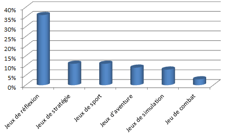
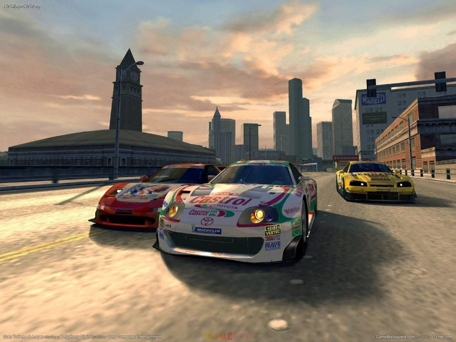
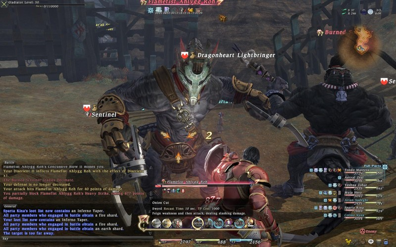
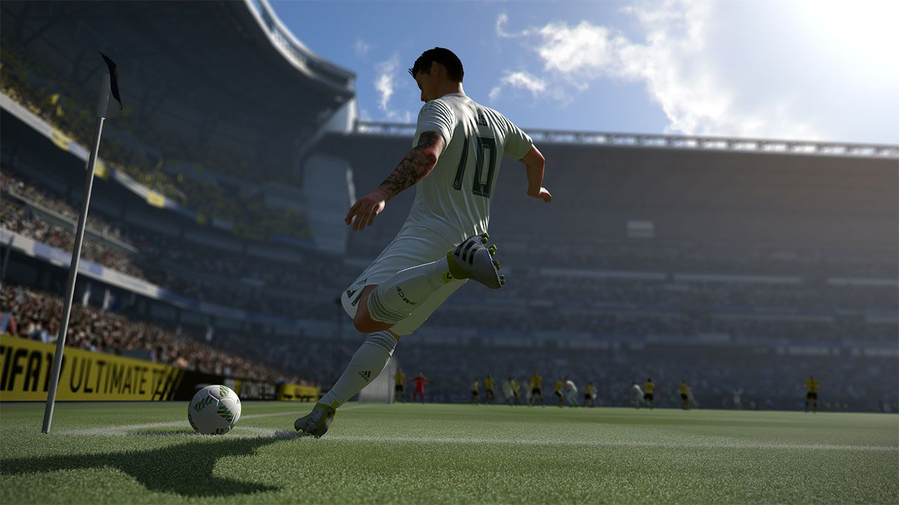
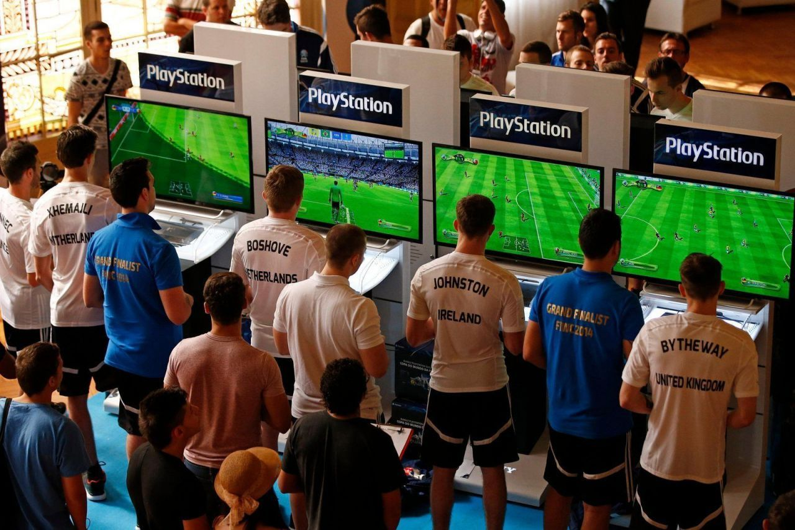
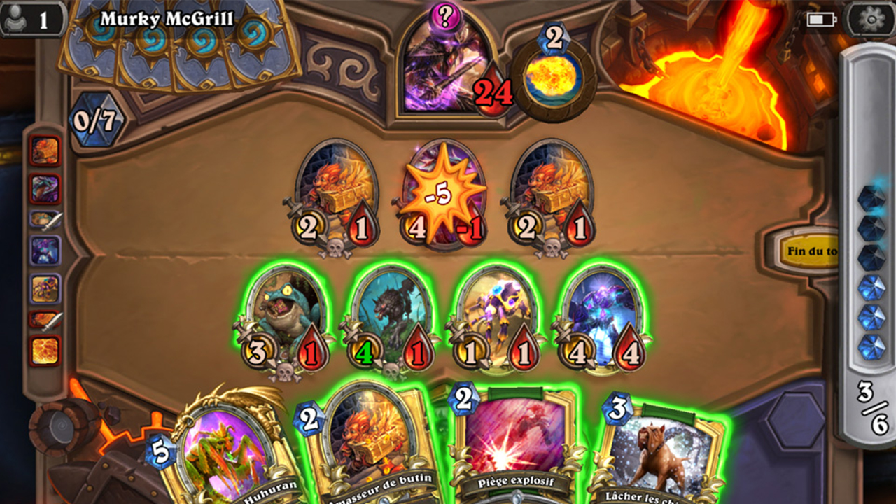

Au cours des 40 dernières années, les jeux vidéo ont beaucoup évolué, et l'industrie du gaming est désormais rentrée dans la cour des grands. Désormais, les développeurs redoublent d'ingéniosité pour nous proposer des jeux novateurs,
et il paraît peu probable que vous ne trouviez un type de jeu qui vous corresponde !
Voici un graphique selon une etudes des types de jeu preferer des francais :

Les différents types de jeux vidéo :
FPS/TPS
Combat
Simulation
Plateforme
MMORPG
Action/Aventure
Sports
Réflexion / Puzzles
FPS/TPS
Les jeux de tir font partie des jeux vidéo les plus populaires, puisqu'ils permettent d'incarner un personnage armée, dans le but de venir à bout d'ennemis en tous genres. Il existe deux types majeurs de jeux de tir : les FPS et les TPS.
FPS
Les FPS (First Person Shooter), où en français « Jeu de tir à la première personne », vous permettent d'incarner un personnage en voyant directement à travers ses yeux. Cela vous permet de voir votre arme ainsi que vos avant-bras.
Certains jeux comme Call of Duy, Valorant où encore Counter Strike sont réputés comme faisant partie des références du genre.
TPS
Les TPS (Third Person Shooter) sont similaires aux FPS, sauf que ces derniers vous placent derrière le personnage que vous contrôlez.
Vous voyez donc une grande partie, voir l'intégralité de son corps afin de vous offrir de
plus grandes possibilités dans vos déplacements et vos interactions.
Combat
Les jeux de combat (versus fighting en anglais) font partie des antiquités, puisque le genre est l'un des premiers à avoir vu le jour,
et il est également celui qui a le plus profiter de l'avènement des bornes d'arcade.
Le but est simple : 2 ennemis s'affrontent en face à face jusqu'à ce que la barre de vie de l'un des deux tombe à 0.
Simulation
Les jeux de simulation tentent de retranscrire au mieux une discipline de la vraie vie, et sont généralement réservés aux puristes. On peut trouver des jeux de simulation de pilotage de voiture, avions, tracteurs, etc...

Plateforme
Les jeux-video de plateforme sont un genre accesible pour tout public (et meme les plus jeunes) le but est souvent simplifier a 2 actions principales, courir et sauter par dessus des obstacles afin de ne pas tomber sur un piège et de perdre de vies.
Il etait tres populaire dans les annees 90's
MMO RPG (jeux de roles)
Chaque joueur est amené à créer ou choisir son personnage autrement appelle avatar au début du jeu. Il pourra ensuite développer son personnage en avançant dans le jeu et selon l'aspect du monde virtuel.
Vous trouverez donc des mondes à aspect fantastique, réaliste, futuriste, s'inspirant de science-fiction, etc... Et ensuite d'explorer un monde ouvert avec des quetes et missions a accomplir.
Progression des personnages :
La majorité des MMORPG reposent sur l'idée de faire progresser le personnage tout au long du jeu, et ceci par différents moyens selon les possibilités disponibles.
Mais dans tous les cas, le personnage évolue et progresse dans un scénario préalablement défini.

Action/Aventure
Les jeux d'action et d'aventure intègrent le plus souvent ces deux mécaniques de jeu : des quêtes ou des embuches qui doivent être vaincus à l'aide
d'un outil ou d'un objet collecté, ainsi qu'un élément d'action où le ou les objets pourront être utilisés.
Les jeux d'action et d'aventure comme The Legend of Zelda se concentrent davantage sur l'exploration :
Sports
Les jeux de sport simulent des sports comme le golf, le football, le basket-ball, le baseball et le tennis.
Ils peuvent aussi inclure des sports olympiques comme le ski, et même des sports plus nichés comme les fléchettes et le billard.

Nous pouvons cité comme reference la serie des FIFA, celebre jeu de simulation football, tres populaire auprès des fans de cette dicipline mais egalement dans le domaine
de l'E-sport, avec notameent le tournois FIWC (creer en 2004) et qui attire de nombreux joueurs dans le monde pour son 1er prix, jusqu'à 200 000 dollars à remporter pour
celui qui aura obtenu les meilleurs resultats de sa poule. Donc l'équivalent de 205 729,60 EUR a l'heure actuel.

Réflexion / Puzzles
Un jeu de logique demande aux joueurs de résoudre un puzzle logique ou de naviguer dans un défi comme un labyrinthe, ils
se déroulent généralement sur un seul écran et propose au joueur de résoudre un problème pour faire avancer dans le jeu.
exemple : The witness ou Tetris.
Ci contre une image du jeu de cartes a jouer : Heartstone

Les jeux - une source dangeureuse d'addiction ?
Nombre de parents et adultes se sont poser cette question retorique a laquel nous ne trouvons jamais de reponse qui convienne a tout le monde.
Deja, depuis le debut des annees 90, les enfants decouvrant cette technologie sont surpris, ils adorent le concept au point parfois dans de rare cas en devenir tres accros et rester pendant des heures durant devant un ecran.
Comme expliquer ci contre sur un reportage venant des archives INA.
La pluparts des psycologue en 2010 pense que "Un usage modèrer des jeux vidéos peut être trouver ! si seulement les parents décide d'un temps de jeu adapter a l'age de l'enfant.
Et surtout de faire attention au sujet du contenu dans lequel il va s'aventurer"
Bref l'usage des jeux video dans la vie quotidienne d'une personne peut être bénéfique sur certains point (comme la construction d'une identité, de préférences, de réflexion, etc..)
a condition bien sur de ne pas en être abusif ou totalement accros mais faire des pauses ou jouer pour se recompenser après une longue journée de travail par exemple.
 TPS
TPS